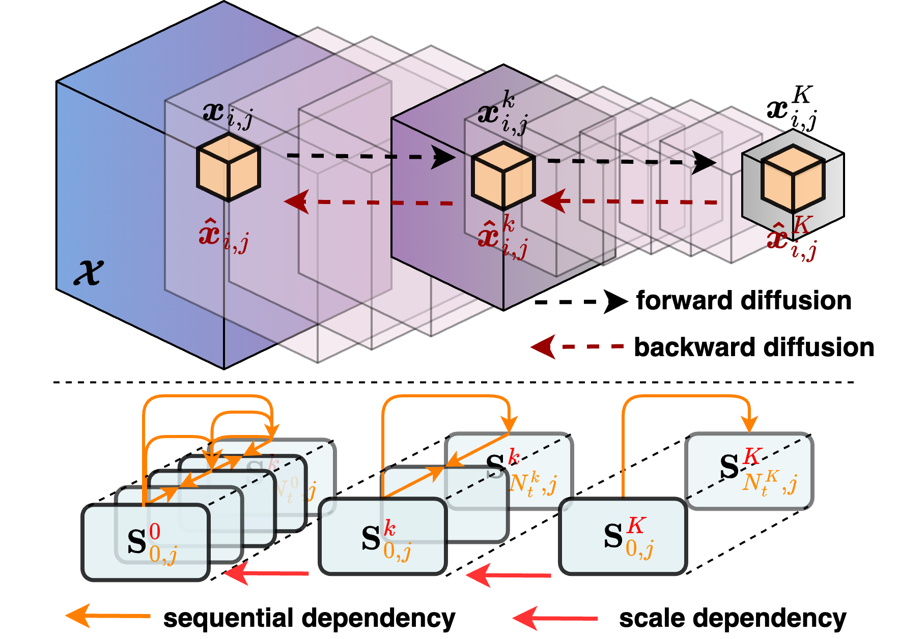
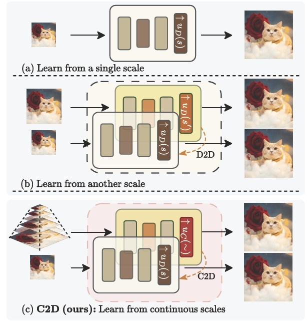
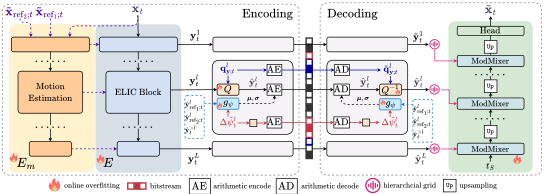
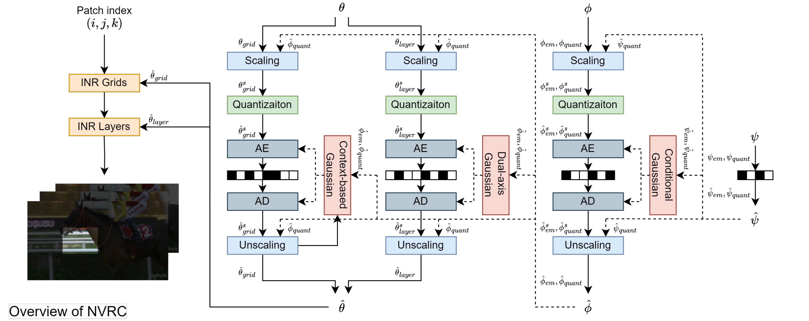

Dr Fan (Aaron) Zhang
Senior Lecturerin Visual Communications
School of Computer Science
University of Bristol
fan.zhang@bristol.ac.uk

About
PhD (Bristol), MSc and BSc (SJTU), Fellow (HEA), Senior Member (IEEE).Member of the VI-Lab and the BVI.
Reviewer for Proceedings of IEEE, IEEE Access, T-BC, T-IP, T-MM, SPL and T-CSVT.
Reviewer for CVPR, NeurIPS, ICCV, ECCV, AAAI, WACV, BMVC, ICASSP, ICIP, ICME, VCIP and PCS.
Member of the VSPC TC associated with the IEEE CAS.
Associate Editor of IEEE T-CSVT (2021-2024).
Meta Reviewer of IEEE ISCAS (2024).
Guest Editor of IEEE JETCAS (2024), Frontiers in Signal Processing (2022).
Organisation Committee, PCS 2021 (Finance Chair), Grand Challenge: Encoding in the Dark within ICME 2021.
Important Download Links
- [Download] databases.
- [Download] source code.
Teaching
Awards
- Third Place in the ECCV 2024 AIM Challenge in Efficient Video Super-Resolution (1st in PSNR, 3rd in VMAF and 1st in efficiency)
- Winner in IEEE MMSP 2024 3rd Practical End-to-end Image/Video Compression Challenge (Track 2)
- First Place in DCC 2024 6th Challenge on Learned Image Compression (CLIC, NR VQA Track)
- First Prize in IEEE/CVF WACV 2023 HDR VQA Grand Challenge (No Reference Track)
- First Prize in IEEE ICIP 2017 Video Compression Grand Challenge
News & Activities
- Feb 2025: The paper on "HIIF: Hierarchical Encoding based Implicit Image Function for Continuous Super-resolution" has been accepted by CVPR 2025.
- Feb 2025: Our BVI-AOM database has been formally accepted by MPEG JVET!
- Jan 2025: I became a Senior Member of IEEE.
- Jan 2025: Three papers have been accepted by IEEE ISCAS 2025.
- Jan 2025: Our paper on "PNVC: Towards Practical INR-based Video Compression" has been selected for Oral Presentation by AAAI 2025.
- Dec 2024: I co-organised the "BMVA Symposium on Image and Video Quality at London.
- Dec 2024: The paper on "PNVC: Towards Practical INR-based Video Compression" has been accepted by AAAI 2025.
- Oct 2024: The paper on "MVAD: A Multiple Visual Artifact Detector for Video Streaming" has been accepted by WACV 2025.
- Sep 2024: We have made the BVI-AOM database publicly available, which offers better performance when used for training deep video coding algorithms and more flexbile copyright terms compared to BVI-DVC.
- Sep 2024: TWO papers have been accepted by IEEE VCIP 2024, including Low latency codec benchmarking and BVI-AOM database.
- Sep 2024: We participated the 5th AIM Challenge in Efficient Video Super-Resolution in ECCV 2024, and our submission ranked THIRD (1st in PSNR, 3rd in VMAF and 1st in efficiency).
- Sep 2024: The paper on "NVRC: Neural Video Representation Compression" has been accepted by NeurIPS 2024.
- Sep 2024: We participated the the 3rd practical end-to-end image/video compression challenge in IEEE MMSP 2024, and our team is the WINNER in Track 2.
- Aug 2024: The paper on "RMT-BVQA: Recurrent Memory Transformer-based Blind Video Quality Assessment for Enhanced Video Content" has been accepted by ECCV Workshop in Advances in Image Manipulation (AIM) 2024.
- Jul 2024: The paper on "MTKD: Multi-Teacher Knowledge Distillation for Image Super-Resolution" has been accepted by ECCV 2024.
- May 2024: We participated the 6th Challenge on Learned Image Compression in Data Compression Conference 2024. Our submission ranked FIRST on the leaderboard in the Video Perception (NR VQA) track.
- Feb 2025: Our BVI-AOM database has been formally accepted by MPEG JVET!
- Apr 2024: The paper on "CVEGAN: a perceptually-inspired GAN for compressed video enhancement" has been accepted by Signal Processing: Image Communication.
- Mar 2024: I became a member of the Visual Signal Processing and Communications Technical Committee associated with the IEEE CAS Society.
- Feb 2024: SIX papers have been accepted by Picture Coding Symposium (PCS) 2024, including BVI-Artefact database, lightweight leant video codec, RankDVQA-mini, VQA for UGC transcoding, low complexity super resolution and INR-based immersive video coding.
- Dec 2023: The paper on "LDMVFI: Video Frame Interpolation with Latent Diffusion Models" has been accepted by AAAI 2024.
- Oct 2023: Our paper on "RankDVQA: Deep VQA based on Ranking-inspired Hybrid Training" has been accepted by IEEE/CVF WACV 2024.
- Oct 2023: The paper on "BVI-VFI: A Video Quality Database for Video Frame Interpolation" has been accepted by IEEE Trans. on Image Processing.
- Sep 2023: Our paper on "HiNeRV: Video Compression with Hierarchical Encoding based Neural Representation" has been accepted by NeurIPS 2023.
- Jun 2023: Our paper on "ST-MFNet Mini: Knowledge Distillation-Driven Frame Interpolation" has been accepted by IEEE ICIP 2023.
- Apr 2023: We have received an Amazon Research Award to conduct research on video quality assessment.
- Jan 2023: We participated the Grand Challenge on HDR Video Quality Measurement in IEEE/CVF WACV 2023, organised by Amazon Prime Video. Our submission ranked the FIRST in the no reference VQA track.
- Dec 2022: Our paper on FloLPIPS: A Bespoke Video Quality Metric for Frame Interpoation was shortlised as one of five best papers in PCS 2022.
- Oct 2022: We have released a video quality database, BVI-VFI, for video frame interpolation.
- Jun 2022: Our team participated the Challenge on Learned Image Compression (CLIC) in IEEE/CVF CVPR 2022, and ranks top six in the video track.
- Jun 2022: Three papers that I contributed to have been accepted by IEEE ICIP 2022, including deformable convolution based VFI, BVI-VFI database and AI-based volumetric video compression.
- Jun 2022: Our paper on "ST-MFNet: Spatio-Temporal Multi-Flow Network for Video Frame Interpolation" has been published in the proceedings of IEEE/CVF Conference on Computer Vision and Pattern Recognition (CVPR) 2022.
- May 2022: Our team participated the Grand Challenge on Neural Network-based Video Coding in IEEE ISCAS 2022, and ranks the Second Place in the hybrid track.
- May 2022: Source code has been released for our deep video compression algorithms: ViSTRA, CNN-based post-processing, MFRNet and CVEGAN.
- Sep 2021: I joined the editorial board of Frontiers in in Signal Processing as a guest associate editor for the research topic of "Video Content Production and Delivery Over IP Networks and Distributed Computing Facilities".
- Aug 2021: Our paper on "BVI-DVC: A Training Database for Deep Video Compression" has been accepted by the IEEE Transactions on Multimedia.
- Jul 2021: VI-Lab has successfully hosted the Picture Coding Symposium 2021 (PCS 2021).
- Jul 2021: I gave a presentation on "Enhancing VMAF through New Feature Integration and Model Combination" in the Special Session on "Perceptually Driven Techniques for Video Compression and Quality Assessment" of PCS 2021.
- Jun 2021: Our paper on "ViSTRA2: Video Coding using Spatial Resolution and Effective Bit Depth Adaptation." was publish in the Elsevier Signal Processing: Image Communication.
- May 2021: I became a lecturer within the Department of Electrical and Electronic Engineering, University of Bristol.
- Jan 2021: PCS 2021 Keynotes, Workshops and Panel Sessions announced.
- Jan 2021: Our paper on "Video Compression with CNN-based Post Processing" has been accepted by the IEEE MultiMedia Magazine.
- Dec 2020: I joined the editorial board of IEEE T-CSVT as an associate editor (2021-2022).
- Nov 2020: Our paper on "MFRNet: A New CNN Architecture for Post-Processing and In-loop Filtering" has been accepted by the IEEE Journal of Selected Topics in Singal Processing Special Issue on Deep Learning for Image/Video Restoration and Compression.
- Jul 2020: We organised a Grand Challenge "Encoding in the Dark" in the IEEE ICME 2020.
- Apr 2020: We released a large video database, BVI-DVC, for training deep learning based video coding algorithms. It has been identified by MPEG JVET AHG11 (neural network-based video coding) as one of their training datasets.
- Jan 2020: VI-Lab won DASA award for research into Learning-Optimal Deep Video Compression, collaborating with Thales UK.
- Nov 2019: VI-Lab announced as host of the 2021 Picture Coding Symposium (PCS2021), where I served as Finance Chair.
Primary Research Areas
- Neural video compression
- Video coding standards
- Video databases
- Video quality assessment
- Super resolution
- Video frame interpolation
- Complexity reduction
Signature Research Projects
CVPR 2025

|
HIIF: Hierarchical Encoding based Implicit Image Function for Continuous Super-resolution
"The first implicit image function based on hierarchical encoding (for ISR)!" Yuxuan Jiang, Ho Man Kwan, Tianhao Peng, Ge Gao, Fan Zhang, Xiaoqing Zhu, Joel Sole, David Bull CVPR, 2025 [arXiv] [code] |
arXiv 2025
 |
GIViC: Generative Implicit Video Compression
"The first INR-based video codec to surpass VTM in the RA coding mode!" Ge Gao, Siyue Teng, Tianhao Peng, Fan Zhang, David Bull arXiv, 2025 [arXiv] |
arXiv 2025
 |
C2D-ISR: Optimizing Attention-based Image Super-resolution from Continuous to Discrete Scales
"The first framework enabling a discrete scale ISR model to learn from its continuous scale version!" Yuxuan Jiang, Chengxi Zeng, Siyue Teng, Fan Zhang, Xiaoqing Zhu, Joel Sole, David Bull arXiv, 2025 [arXiv] |
arXiv 2025

|
Blind Video Super-Resolution based on Implicit Kernels
"The first blind video super resolution based on implicit kernels!" Qiang Zhu, Yuxuan Jiang, Shuyuan Zhu, Fan Zhang, David Bull, Bing Zeng arXiv, 2025 [arXiv] |
AAAI 2025 (oral)
 |
PNVC: Towards Practical INR-based Video Compression
"The first INR-based video codec achieving per-frame encoding and competitive performance!" Ge Gao, Ho Man Kwan, Fan Zhang and David Bull AAAI (oral), 2025 [arXiv] |
WACV 2025

|
MVAD: A Multiple Visual Artifact Detector for Video Streaming
"The first multi-artifact detection framework without replying on VQA!" Chen Feng, Duolikun Danier, Fan Zhang and David Bull WACV, 2025 [arXiv] [code] |
NeurIPS 2024
 |
NVRC: Neural Video Representation Compression
"The first INR-based video codec outperforming VTM (RA)!" Ho Man Kwan, Ge Gao, Fan Zhang, Andrew Gower and David Bull NeurIPS, 2024 [arXiv] [code] |
ECCV 2024

|
MTKD: Multi-Teacher Knowledge Distillation for Image Super-Resolution
"A student model can outperform its teaching models through MTKD!" Yuxuan Jiang, Chen Feng, Fan Zhang and David Bull ECCV, 2024 [arXiv] [code] |
arXiv 2024

|
BVI-UGC: A Video Quality Database for User-Generated Content Transcoding
"The first video quality database focusing on UGC transcoding!" Zihao Qi, Chen Feng, Fan Zhang, Xiaozhong Xu, Shan Liu, David Bull arXiv, 2024 [arXiv] [Database] |
ECCV AIM Workshop 2024

|
RMT-BVQA: Recurrent Memory Transformer-based Blind Video Quality Assessment for Enhanced Video Content
"The first deep VQA model based on RMT!" Tianhao Peng, Chen Feng, Duolikun Danier, Fan Zhang, Benoit Vallade, Alex Mackin and David Bull ECCV AIM Workshop, 2024 [arXiv] [Code] |
AAAI 2024

|
LDMVFI: Video Frame Interpolation with Latent Diffusion Models
"The first latent diffusion model based VFI method!" Duolikun Danier, Fan Zhang and David Bull AAAI Conference on Artificial Intelligence (AAAI), 2024 [arXiv] [code] |
WACV 2024

|
RankDVQA: Deep VQA based on Ranking-inspired Hybrid Training
"The first deep VQA model optimised through ranking-based training!" Chen Feng, Duolikun Danier, Fan Zhang, David Bull IEEE/CVF Winter Conference on Applications of Computer Vision (WACV), 2024 [arXiv] [project] [code] |
NeurIPS 2023

|
HiNeRV: Video Compression with Hierarchical Encoding-based Neural Representation
"The first INR-based video codec significantly outperforming x265!" Ho Man Kwan, Ge Gao, Fan Zhang, Andrew Gower, David Bull NeurIPS, 2023 [arXiv] [project] [code] |
TMM 2021

|
BVI-DVC: A Training Database for Deep Video Compression
"The training database used by MPEG JVET for deep video compression!" Di Ma, Fan Zhang, David Bull IEEE Transactions on Multimedia (TMM), 2021 [paper] [arXiv] [project] [database] |
Signal Process. Image Commun. 2024

|
CVEGAN: A Perceptually-inspired GAN for Compressed Video Enhancement
"A GAN structure with improved cardinality and a novel perceptual loss!" Di Ma, Fan Zhang, David Bull Elsevier Signal Processing: Image Communication, 2024 [arXiv] [project] [code] |
TIP 2023

|
BVI-VFI: A Video Quality Database for Video Frame Interpolation
"The first video quality database for VFI!" Duolikun Danier, Fan Zhang, David Bull IEEE Transactions on Image Processing (TIP), 2023 [paper] [arXiv] [project] [database] [github] |
CVPR 2022

|
ST-MFNet: A Spatio-Temporal Multi-Flow Network for Frame Interpolation
"A Multi-Flow VFI model performing well on large motions and dynamic textures!" Duolikun Danier, Fan Zhang, David Bull IEEE/CVF Conference on Computer Vision and Pattern Recognition (CVPR), 2022 [arXiv] [project] [code] |
Publications
Book and Book Chapters
- Intelligent Image and Video Compression: Communicating Pictures. [book][resource]
D. Bull and F. Zhang, 2nd Edition, Oxford: Academic Press, 2021.
- Measuring video quality. [book]
F. Zhang and D. Bull, In: Sergios Theodoridis and Rama Chellappa, editors, Academic Press Library in Signal Processing. Vol 5. , Oxford: Academic Press, 2014, pp 227-249. ISBN: 978-0-12-420149-1.
- [AHG11] Response to Call for training materials for neural network-based video coding tool development (JVET-AK0255) [document]
F. Zhang, D. Bull, J. Nawala, Y. Jiang, X. Zhu, J. Sole, E. Alshina, MPEG JVET proposal, January 2025.
- A New Training Workflow for Optimizing Low Complexity ML-based Coding Tools (CWG-E240)
Y. Jiang, J. Nawala, F. Zhang, X. Zhu, J. Sole and D. Bull, AOM proposal, December 2024.
- BVI-AOM dataset (CWG-E082)
J. Nawala, Y. Jiang , F. Zhang, X. Zhu, J. Sole and D. Bull, AOM proposal, April 2024.
- Description of SDR video coding technology proposal by University of Bristol (JVET-J0031) [document]
D. Bull, F. Zhang and M. Afonso, A submission to the Joint Call for Proposals on Video Compression with Capability beyond HEVC, April 2018 in San Diego.
- BVI_Texture UHD 120fps test sequences for HEVC and beyond (JCTVC-V0099) [document]
M. Papadopoulos, F. Zhang, D. Agrafiotis, D. Bull and J.-R. Ohm, October 2015 in Geneva.
- GIViC: Generative Implicit Video Compression. [arXiv]
Ge Gao, Siyue Teng, Tianhao Peng, Fan Zhang, David Bull, arXiv:2503.19604, 2025.
- C2D-ISR: Optimizing Attention-based Image Super-resolution from Continuous to Discrete Scales. [arXiv]
Yuxuan Jiang, Chengxi Zeng, Siyue Teng, Fan Zhang, Xiaoqing Zhu, Joel Sole, David Bull, arXiv:2503.13740, 2025.
- Blind Video Super-Resolution based on Implicit Kernels. [arXiv]
Qiang Zhu, Yuxuan Jiang, Shuyuan Zhu, Fan Zhang, David Bull, Bing Zeng, arXiv:2503.07856, 2025.
- Towards a General-Purpose Zero-Shot Synthetic Low-Light Image and Video Pipeline. [arXiv]
J Lin, C Morris, R Lin, F Zhang, D Bull, N Anantrasirichai, arXiv:2504.12169, 2025.
- FCVSR: A Frequency-aware Method for Compressed Video Super-Resolution. [arXiv]
Q Zhu, F Zhang, F Chen, S Zhu, D Bull, B Zeng, arXiv:2502.06431, 2025.
- CULTURE3D: Cultural Landmarks and Terrain Dataset for 3D Applications. [arXiv]
X. Zheng, S. Zhang, W. Lin, F. Zhang, W. W. Mayol-Cuevas, J. Shen, arXiv:2501.06927, 2025.
- X-LeBench: A Benchmark for Extremely Long Egocentric Video Understanding. [arXiv]
W. Zhou, K. Cao, H. Zheng, X. Zheng, M. Liu, P. O. Kristensson, W. Mayol-Cuevas, F. Zhang, W. Lin, J. Shen, arXiv:2501.06835, 2025.
- Artificial Intelligence in Creative Industries: Advances Prior to 2025. [arXiv]
N. Anantrasirichai, F. Zhang, D. Bull, arXiv:2501.02725, 2025.
- Human-inspired Perspectives: A Survey on AI Long-term Memory. [arXiv]
Z. He, W. Lin, H. Zheng, F. Zhang, M. Jones, L. Aitchison, X. Xu, M. Liu, P. O. Kristensson, J. Shen, arXiv:2411.00489, 2024.
- BVI-UGC: A Video Quality Database for User-Generated Content Transcoding. [paper][database]
Z. Qi, C. Feng, F. Zhang, X. Xu, S. Liu, D. Bull, arXiv:2408.07171, 2024.
- Survey on Visual Signal Coding and Processing with Generative Models: Technologies, Standards and Optimization. [arXiv][paper]
Z. Chen, H. Sun, L. Zhang and F. Zhang, IEEE Journal on Emerging and Selected Topics in Circuits and Systems, 2024.
- Guest Editorial Advances in Generative Visual Signal Coding and Processing. [paper]
Z. Chen, H. Sun, L. Zhang and F. Zhang, IEEE Journal on Emerging and Selected Topics in Circuits and Systems, 2024.
- CVEGAN: a perceptually-inspired GAN for compressed video enhancement. [paper][project & code]
D. Ma, F. Zhang, and D. R. Bull, Signal Processing: Image Communication, 2024.
- BVI-VFI: A Video Quality Database for Video Frame Interpolation. [paper][project & database]
D. Danier, F. Zhang and D. Bull, IEEE Trans. on Image Processing, 2024.
- A multiple-UAV architecture for autonomous media production. [paper]
I. Mademlis, A. Torres-Gonzalez, J. Capitan, M. Montagnuolo, A. Messina, F. Negro, C. Le Barz, T. Goncalves, R. Cunha, B. Guerreiro, F. Zhang, S. Boyle, G. Guerout, A. Tefas, N. Nikolaidis, D. Bull and I. Pitas, Multimedia Tools and Applications, 2023.
- BVI-CC: A Dataset for Research on Video Compression and Quality Assessment. [paper][dataset]
A. V. Katsenou, F. Zhang, M. Afonso, G. Dimitrov and D. R. Bull, Frontiers in Signal Processing, 2022.
- Optimising VVC Encoding Using Key Frame Selection. [paper]
S. Nagaraju, F. Zhang, S. Takamura, D. R. Bull, IIEEJ Transactions On Image Electronics, 2021.
- BVI-DVC: A Training Database for Deep Video Compression. [paper][dataset]
D. Ma, F. Zhang, and D. R. Bull, IEEE Trans. on Multimedia, 2021.
- ViSTRA2: Video Coding using Spatial Resolution and Effective Bit Depth Adaptation. [paper][project]
F. Zhang, M. Afonso and D. R. Bull, Elsevier Signal Processing Image Communication, 2021.
- Video Compression with CNN-based Post Processing. [paper][project]
F. Zhang, D. Ma, C. Feng and D. R. Bull, IEEE MultiMedia Magazine, 2020.
- MFRNet: A New CNN Architecture for Post-Processing and In-loop Filtering. [paper]
D. Ma, F. Zhang, and D. R. Bull, IEEE Journal of Selected Topics in Singal Processing, 2020.
- A Study of High Frame Rate Video Formats. [paper][project][dataset]
A. Mackin, F. Zhang, and D. R. Bull, IEEE T-MM, 2019.
- Video Compression based on Spatio-Temporal Resolution Adaptation. [paper][project]
M. Afonso, F. Zhang and D. R. Bull, IEEE T-CSVT (Letter), 2019.
- Rate-distortion Optimization Using Adaptive Lagrange Multipliers. [paper][project]
F. Zhang and D. R. Bull, IEEE T-CSVT, 2019.
- BVI-HD: A Video Quality Database for HEVC Compressed and Texture Synthesised Content. [paper][dataset]
F. Zhang, F. Mercer Moss, R. Baddeley and D. R. Bull, IEEE T-MM, 2018.
- Reduced-Reference Video Quality Metric Using Spatial Information in Salient Regions. [paper]
F. D. A. Rahman, D. Agrafiotis, O. O. Khalifa and F. Zhang, TELKOMNIKA (Telecommunication Computing Electronics and Control), 2018.
- On the Optimal Presentation Duration for Subjective Video Quality Assessment. [dataset][project]
F. Mercer Moss, K. Wang, F. Zhang, R. Baddeley and D. Bull, IEEE T-CSVT, November 2016.
- Support for Reduced Presentation Durations in Subjective Video Quality Assessment. [paper][project]
F. Mercer Moss, C.-T. Yeh, F. Zhang, R. Baddeley, D. R. Bull, Elsevier Signal Processing: Image Communication, October 2016.
- A Perception-based Hybrid Model for Video Quality Assessment [paper][code][project]
F. Zhang and D. Bull, IEEE T-CSVT, June 2016.
- Perception-oriented Video Coding based on Image Analysis and Completion: a Review. [paper]
P. Ndjiki-Nya, D. Doshkov, H. Kaprykowsky, F. Zhang, D. Bull, T. Wiegand, Signal Processing: Image Communication, July 2012.
- A Parametric Framework For Video Compression Using Region-based Texture Models. [paper][project]
F. Zhang and D. Bull, IEEE J-STSP, November 2011.
- HIIF: Hierarchical Encoding based Implicit Image Function for Continuous Super-resolution. [arXiv]
Y. Jiang, H. M. Kwan, T. Peng, G. Gao, F. Zhang, X. Zhu, J. Sole, D. Bull, CVPR, 2025.
- Agglomerating Large Vision Encoders via Distillation for VFSS Segmentation. [arXiv]
C Zeng, Y Jiang, F Zhang, A Gambaruto, T Burghardt, CVPRW (ELVM), 2025.
- PNVC: Towards Practical INR-based Video Compression. [arXiv]
G. Gao, H. M. Kwan, F. Zhang, and D. Bull, AAAI (oral), 2025.
- RTSR: A Real-Time Super-Resolution Model for AV1 Compressed Content. [arXiv]
Y. Jiang, J. Nawala, C. Feng, F. Zhang, X. Zhu, J. Sole, D. Bull, ISCAS, 2025.
- BVI-CR: A Multi-View Human Dataset for Volumetric Video Compression. [arXiv][Database]
G. Gao, A. Azzarelli, H. M. Kwan, N. Anantrasirichai, F. Zhang, W. Andrew, O. Moolan-Feroze and D. Bull, ISCAS, 2025.
- Enhancing HDR Video Compression through CNN-based Effective Bit Depth Adaptation. [paper]
C. Feng, Z. Qi, D. Danier, F. Zhang, X. Xu, S. Liu, D. Bull, ISCAS, 2025.
- DaBiT: Depth and Blur informed Transformer for Joint Refocusing and Super-Resolution. [paper]
C. Morris, N. Anantrasirichai, F. Zhang, D. Bull, WACV Workshop, 2025.
- MVAD: A Multiple Visual Artifact Detector for Video Streaming. [arXiv] [code]
C. Feng, D. Danier, F. Zhang, D. Bull, WACV 2025.
- UW-GS: Distractor-Aware 3D Gaussian Splatting for Enhanced Underwater Scene Reconstruction. [arXiv]
H. Wang, N. Anantrasirichai, F. Zhang, and D. Bull, WACV, 2025.
- NVRC: Neural Video Representation Compression. [arXiv] [paper] [code]
H. M. Kwan, G. Gao, F. Zhang, Andrew Gower, and D. Bull, NeurIPS, 2024.
- MTKD: Multi-Teacher Knowledge Distillation for Image Super-Resolution. [paper][code]
Y. Jiang, C. Feng, F. Zhang, D. Bull, ECCV, 2024.
- LDMVFI: Video Frame Interpolation with Latent Diffusion Models. [paper][code]
D. Danier, F. Zhang, D. Bull, AAAI, 2024.
- RankDVQA: Deep VQA based on Ranking-inspired Hybrid Training. [paper][code]
C. Feng, D. Danier, F. Zhang, and D. R. Bull, IEEE/CVF WACV 2024.
- RMT-BVQA: Recurrent Memory Transformer-based Blind Video Quality Assessment for Enhanced Video Content. [paper] [code]
T. Peng, C. Feng, D. Danier, F. Zhang, B. Vallade, A. Mackin and D. Bull, ECCV AIM Workshop, 2024.
- Benchmarking Conventional and Learned Video Codecs with a Low-Delay Configuration. [paper]
S. Teng, Y. Jiang, G. Gao, F. Zhang, T. Davis, Z. Liu and D. Bull, IEEE VCIP, 2024.
- BVI-AOM: A New Training Dataset for Deep Video Compression Optimization. [paper][database]
J. Nawala, Y. Jiang, F. Zhang, X. Zhu, J. Sole, D. Bull, IEEE VCIP, 2024.
- ST-MFNet Mini: Knowledge Distillation-Driven Frame Interpolation. [paper][code]
C. Morris, D. Danier, F. Zhang, N. Anantrasirichai and D. Bull, ICIP, 2023.
- Immersive Video Compression using Implicit Neural Representations. [paper] [code]
H M Kwan, F Zhang, A Gower, D Bull, PCS, 2024.
- Compressing Deep Image Super-resolution Models. [paper][code]
Y Jiang, J Nawala, F Zhang, D Bull, PCS, 2024.
- Full-reference Video Quality Assessment for User Generated Content Transcoding. [paper]
Z Qi, C Feng, D Danier, F Zhang, X Xu, S Liu, D Bull, PCS, 2024.
- RankDVQA-mini: Knowledge Distillation-Driven Deep Video Quality Assessment. [paper]
C Feng, D Danier, H Wang, F Zhang, B Vallade, A Mackin and D Bull, PCS, 2024.
- BVI-Artefact: An Artefact Detection Benchmark Dataset for Streamed Videos. [paper] [database]
C Feng, D Danier, F Zhang, A Mackin, A Collins and D Bull, PCS, 2024.
- Accelerating Learnt Video Codecs with Gradient Decay and Layer-wise Distillation. [paper] [code]
T Peng, G Gao, H Sun, F Zhang, D Bull, PCS, 2024.
- HiNeRV: Video Compression with Hierarchical Encoding based Neural Representation. [paper][code]
Ho Man Kwan, Ge Gao, Fan Zhang, Andrew Gower, David Bull, NeurIPS 2023.
- ST-MFNet: Spatio-Temporal Multi-Flow Network for Video Frame Interpolation. [paper][project & Code]
D. Danier, F. Zhang, and D. R. Bull, IEEE/CVF CVPR, 2022
- Analysis of video quality induced spatio-temporal saliency shifts. [paper]
X. Wu, Z. Dong, F. Zhang, P. L. Rosin and H. Liu, IEEE ICIP, 2022
- Identifying pitfalls in the evaluation of saliency models for videos. [paper]
Z. Dong, X. Wu, X. Zhao, F. Zhang, and H. Liu, IEEE IVMSP Workshops, 2022
- FloLPIPS: A Bespoke Video Quality Metric for Frame Interpoation. [paper][project & Code]
D. Danier, F. Zhang, and D. Bull, PCS, 2022.
- Enhancing VVC with Deep Learning based Multi-Frame Post-Processing. [paper]
D. Danier, C. Feng, F. Zhang, and D. R. Bull, 5th Challenge on Learned Image Compression (in IEEE/CVF CVPR), 2022
- Enhancing Deformable Convolution based Video Frame Interpolation with Coarse-to-fine 3D CNN. [paper][project & code]
D. Danier, F. Zhang, and D. R. Bull, ICIP 2022.
- A CNN-based Post-Processor for Perceptually-Optimized Immersive Media Compression. [paper]
A. Katsenou, F. Zhang, and D. R. Bull, accetpted by ICIP 2022.
- A Subjective Quality Study for Video Frame Interpolation. [paper][project]
D. Danier, F. Zhang, and D. R. Bull, accetpted by ICIP 2022.
- ViSTRA3: Video Coding with Deep Parameter Adaptation and Post Processing. [paper]
C. Feng, D. Danier, C. Tan, F. Zhang, D. Bull, Grand Challenge on Neural Network-based Video Coding in IEEE ISCAS, 2022
- Enhancing VMAF through New Feature Integration and Model Combination. [paper]
Fan Zhang, Angeliki Katsenou, Christos Bampis, Lukas Krasula, Zhi Li and David Bull, PCS, 2021.
- A Subjective Study on Videos at Various Bit Depths. [paper]
Alex Mackin, Di Ma, Fan Zhang and David Bull, PCS, 2021.
- VMAF-based Bitrate Ladder Estimation for Adaptive Streaming. [paper]
Angeliki V. Katsenou, Fan Zhang, Kyle Swanson, Mariana Afonso, Joel Sole and David R. Bull, PCS, 2021.
- Key Reference Frame Selection for VVC Encoding. [paper]
S. Nagaraju, F. Zhang, S. Takamura, D. R. Bull, Proceedings of the 49th Annual Conference of the Institute of Image Electronics Engineers of Japan, 2021.
- Enhancing VVC through CNN-based Post-Processing. [paper][project]
F. Zhang, C. Feng and D. Bull, ICME, 2020.
- A Simulation Environment for Drone Cinematography. [paper]
F. Zhang, D. Hall, T. Xu, S. Boyle and D. Bull, IBC, 2020.
- Video compression with low complexity CNN-based spatial resolution adaptation. [paper]
D. Ma, F. Zhang, and D. Bull, SPIE, 2020.
- GAN-based Effective Bit Depth Adaptation for Perceptual Video Compression. [paper]
D. Ma, F. Zhang and D. Bull, ICME, 2020.
- Encoding in the Dark Grand Challenge: An Overview. [paper]
N. Anantrasirichai, F. Zhang, A. Malyugina, P. Hill, A. Katsenou, ICME Workshops, 2020.
- Enhanced Video Compression based on Effective Bit Depth Adaptation. [paper]
F. Zhang, M. Afonso and D. Bull, ICIP, 2019.
- A Subjective Study of Viewing Experience for Drone VIdeos Using Simulated Content. [paper]
S. Boyle, F. Zhang and D. Bull, ICIP, 2019.
- A Subjective Comparison of AV1 and HEVC for Adaptive Video Streaming. [paper][dataset]
A. Katsenou, F. Zhang, M. Afonso and D. Bull, ICIP, 2019.
- Frame Rate Conversion Method based on a Virtual Shutter Angle. [paper]
A. Mackin, F. Zhang and D. Bull, ICIP, 2019.
- Environment Capture and Simulation for UAV Cinematography Planning and Training. [paper]
S. Boyle, M. Newton, F. Zhang and D. Bull, EUSIPCO, 2019.
- Perceptually-inspired Super-resolution of Compressed Videos. [paper]
D. Ma, M. Afonso, F. Zhang and D. Bull, SPIE, 2019.
- The Future of Media Production Through Multi-drones' Eyes. [paper]
A. Messina, S. Metta, M. Montagnuolo, F. Negro, V. Mygdalis, I. Pitas, J. Capitan, A. Torres, S. Boyle, D. Bull and F. Zhang, IBC, 2018.
- A study of subjective video quality at various spatial resolutions. [paper][dataset]
A. Mackin, M. Afonso, F. Zhang and D. Bull, ICIP, 2018.
- Spatial resolution adaptation framework for video compression. [paper]
M. Afonso, F. Zhang and D. Bull, SPIE, 2018.
- SRQM: A Video Quality Metric for Spatial Resolution Adaptation. [paper][code]
A. Mackin, M. Afonso, F. Zhang and D. Bull, PCS, 2018.
- A Frame Rate Dependent Video Quality Metric based on Temporal Wavelet Decomposition and Spatiotemporal Pooling. [paper][code]
F Zhang, A Mackin and D. R. Bull, ICIP, 2017.
- Low Complexity Video Coding Based on Spatial Resolution Adaptation. [paper]
M. Afonso, F. Zhang, A. Katsenou, D. Agrafiotis, D. Bull, ICIP, 2017.
- Investigating the Impact of High Frame Rates on Video Compression. [paper][dataset]
A. Mackin, F. Zhang, M. A. Papadopoulos, D. Bull, ICIP, 2017.
- Video Texture Analysis based on HEVC Encoding
Statistics. [paper][dataset]
M. Afonso, A. Katsenou, F. Zhang, D. Agrafiotis, D. Bull, PCS, 2016.
- HEVC Enhancement using Content-based Local QP Selection. [paper]
F. Zhang and D. Bull, ICIP, 2016.
- An Adaptive QP Offset Determination Method for HEVC. [paper]
M. A. Papadopoulos, F. Zhang, D. Agrafiotis, D. R. Bull, ICIP, 2016.
- What's on TV: A Large Scale Quantitative Characterisation of Modern Broadcast Video Content. [paper][project]
F. Mercer Moss, F. Zhang, R. Baddeley, D. R. Bull, ICIP, 2016.
- An Adaptive Lagrange Multiplier Determination Method for Rate-distortion Optimisation in Hybrid Video Codecs. [paper][project]
F. Zhang and D. Bull, ICIP, 2015.
- A Study of Subjective Video Quality at Various Frame Rates. [paper][dataset]
A. Mackin, F. Zhang and D. Bull, ICIP, 2015.
- A Very Low Complextiy Reduced Reference Video Quality Metric based on Spatio-temporal Information Selection. [paper]
M. Wang, F. Zhang and D. Agrafiotis, ICIP, 2015.
- A Video Texture Database for Perceptual Compression and Quality Assessment. [paper][dataset]
M. A. Papadopoulos, F. Zhang, D.Agrafiotis and D. Bull, ICIP, 2015.
- Optimal sequence duration for subjective video quality assessment. [paper][project]
F. J. Mercer Moss, K. Wang, F. Zhang, R. Baddeley and D. Bull, SPIE Optical Engineering+ Applications, 2015.
- Quality Assessment Methods for Perceptual Video Compression. [paper][code][project]
F. Zhang and D. Bull, ICIP, Melbourne, Australia, September 2013.
- Production of high dynamic range video. [paper]
M. Price, D. Bull, T. Flaxton, S. Hinde, R. Salmon, A. Sheikh, G. Thomas, and F. Zhang, IBC, Amsterdam, September, 2013.
- Advances in Region-based Texture Modeling for Video Compression. [paper][project]
F. Zhang and D. Bull, Proc. SPIE 8135, San Diego, USA, August, 2011.
- Enhanced Video Compression With Region-Based Texture Models. [paper][project]
F. Zhang and D. Bull, PCS, Nagoya, Japan, December, 2010.
- Region-Based Texture Modelling For Next Generation Video Codecs [paper][project]
F. Zhang, D. Bull, and N. Canagarajah, ICIP, Hong Kong, China, September, 2010.
- Exploring the Challenges of Higher Frame Rates:
from Quality Assessment to Frame Rate Selection. [paper][project]
A. V. Katsenou, A. Mackin, D. Ma, F. Zhang and D. R. Bull, IEEE COMSOC MMTC Communications - Frontiers (E-Letter), May 2018 (invited).